Actividad 04
Una página demasiado convincente
Simulación controlada de una técnica de phishing mediante Social-Engineer Toolkit (SET) y una página web institucional ficticia.
Objetivo
Implementar y analizar, dentro de un entorno de laboratorio controlado, una simulación de ingeniería social mediante Social-Engineer Toolkit (SET) y su módulo Credential Harvester, utilizando una página web institucional ficticia para comprender cómo la información introducida en un formulario puede ser transmitida y registrada por un servidor.
Desarrollo
Para la simulación se diseñó un portal de autenticación
perteneciente a NovaTech Instituto Superior, una
institución completamente ficticia creada para la actividad.
La página presenta un aviso de sesión expirada y solicita
un usuario y contraseña institucionales, representando un
escenario en el que la ingeniería social busca proporcionar
una razón aparentemente legítima para que el usuario vuelva
a introducir sus credenciales.
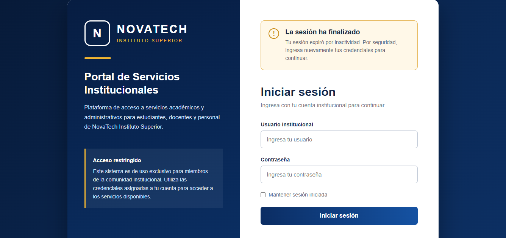
Configuración del laboratorio
El portal fue desarrollado mediante HTML y CSS en el equipo
anfitrión. Posteriormente, la carpeta del proyecto se compartió
con la máquina virtual Kali Linux mediante la función de
carpetas compartidas de VirtualBox.
Desde Kali se verificó el acceso al archivo
index.html y se copió al directorio de trabajo
utilizado durante la práctica.
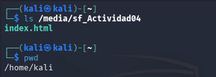
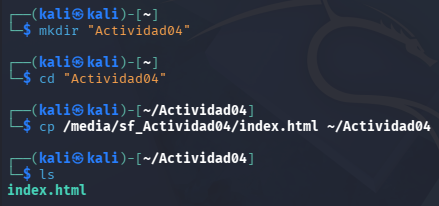
Configuración de SET
Social-Engineer Toolkit se ejecutó desde Kali Linux y se
seleccionó la ruta:
Social-Engineering Attacks →
Website Attack Vectors →
Credential Harvester Attack Method →
Custom Import
La opción Custom Import permitió utilizar el portal
desarrollado específicamente para la práctica, evitando
emplear o clonar páginas pertenecientes a organizaciones reales.
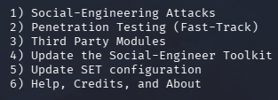
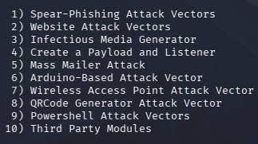
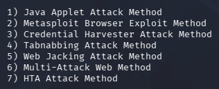
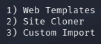
El servidor fue configurado utilizando la dirección
127.0.0.1, correspondiente a localhost, y el portal
se mantuvo exclusivamente dentro de la máquina virtual.
De esta manera, la simulación permaneció aislada y se realizó
únicamente con datos ficticios dentro de un entorno controlado.
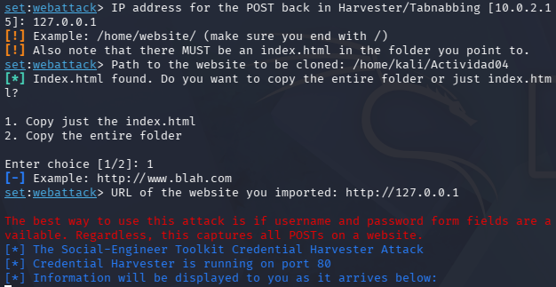
Flujo de captura de información
Credential Harvester es el componente encargado de
recibir y registrar la información enviada mediante un
formulario web.
Durante la prueba, el usuario introdujo credenciales
completamente ficticias en el portal. Al seleccionar
Iniciar sesión, el formulario transmitió los parámetros
username y password mediante una petición HTTP
POST hacia el servidor local ejecutado por SET.
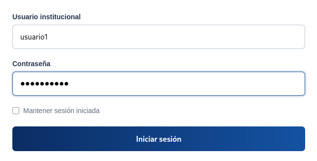
Credential Harvester recibió la petición e identificó los
parámetros correspondientes al usuario y contraseña,
mostrándolos posteriormente en la terminal.
Este proceso representa una captura de credenciales,
no una vulneración de contraseña. SET no descifró ni descubrió
una clave desconocida; los valores fueron recibidos porque
habían sido introducidos y enviados directamente mediante
el formulario.
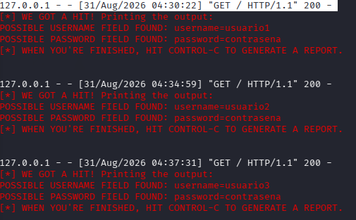
El flujo observado durante la práctica puede resumirse como:
Usuario → Formulario web → Petición HTTP POST →
Servidor local → Credential Harvester →
Registro de parámetros
Finalmente, SET generó un reporte en formato XML en el que
quedaron registrados los datos ficticios utilizados durante
las diferentes pruebas.
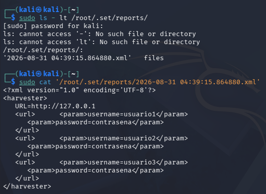
Resultados
Se logró configurar correctamente un escenario local de
simulación de phishing mediante SET y una página institucional
ficticia.
Durante las pruebas se comprobó que los datos introducidos
en el formulario eran enviados al servidor local mediante
una petición HTTP y que Credential Harvester podía identificar
y registrar los parámetros correspondientes al usuario y la
contraseña.
También se verificó la persistencia de los resultados mediante
el reporte XML generado por SET, donde quedaron almacenados
los diferentes datos ficticios utilizados durante las pruebas.
Conclusión
La actividad permitió comprender de manera práctica cómo
una técnica de phishing puede combinar ingeniería social
y herramientas técnicas para obtener información proporcionada
por un usuario.
La simulación permitió observar que la captura de credenciales
no requiere necesariamente vulnerar una contraseña, ya que
el usuario puede ser persuadido para proporcionar directamente
sus datos a un sistema fraudulento.
Por ello, la prevención del phishing requiere combinar la
concientización de los usuarios con diferentes controles
técnicos de seguridad.